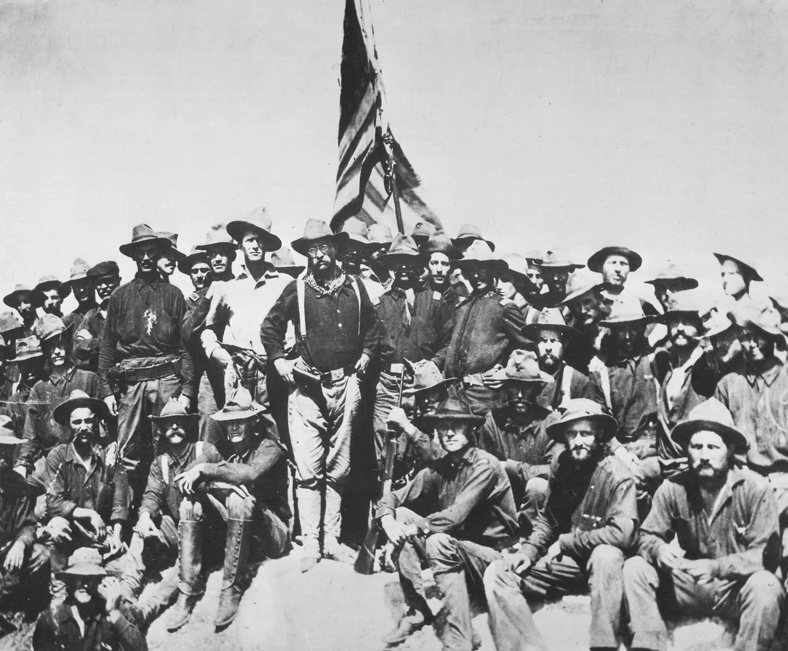
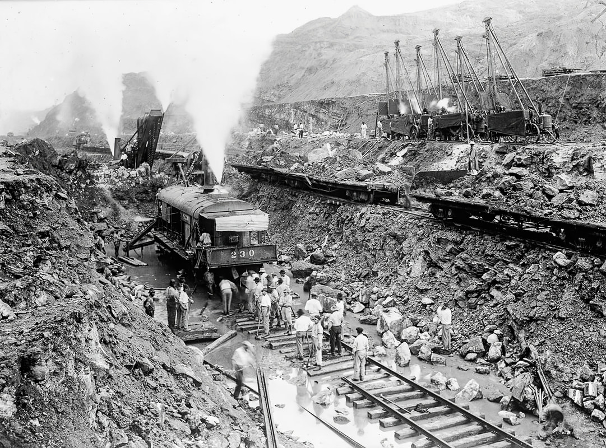
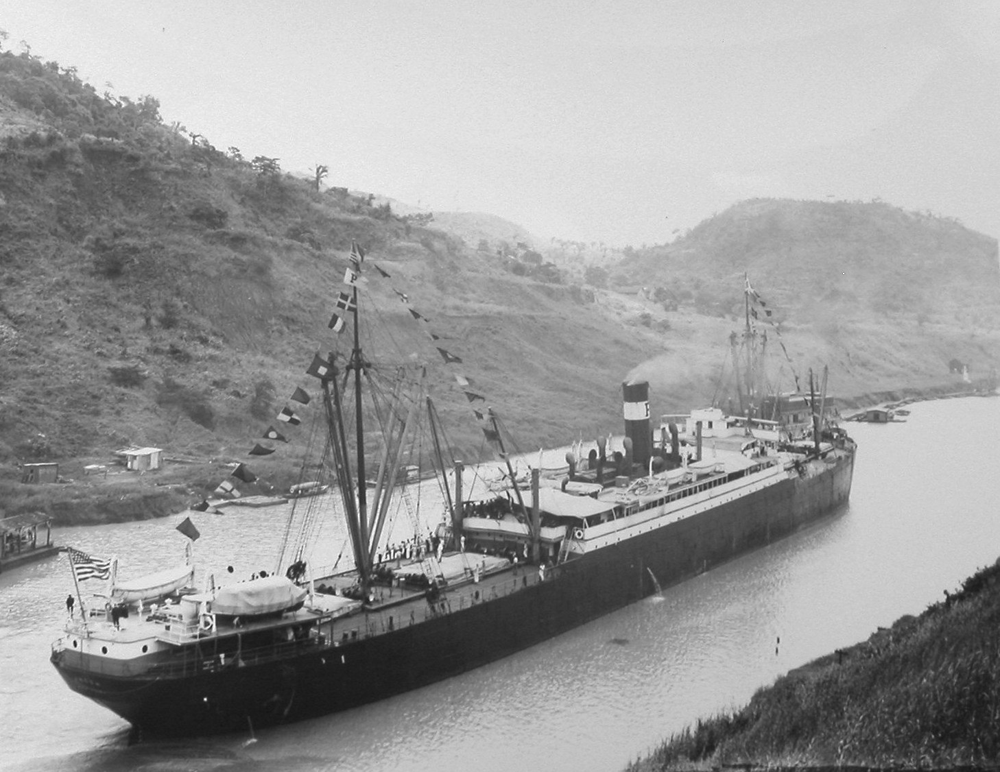
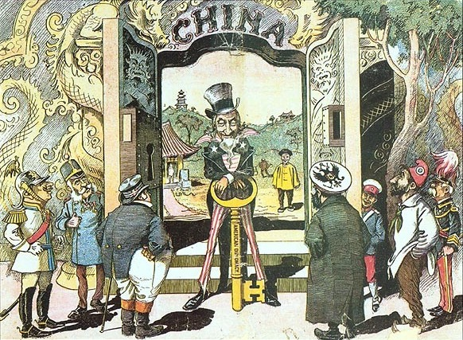
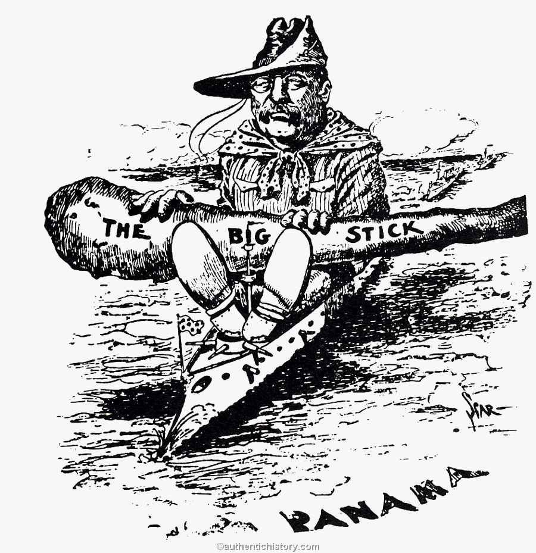
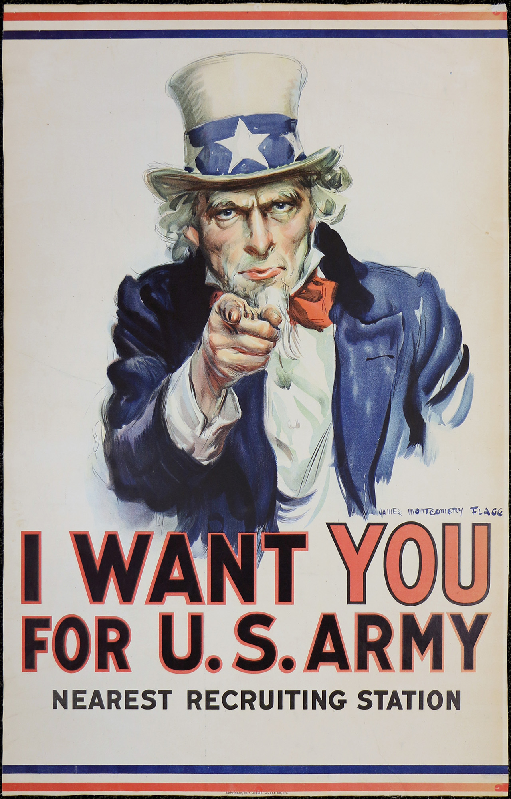
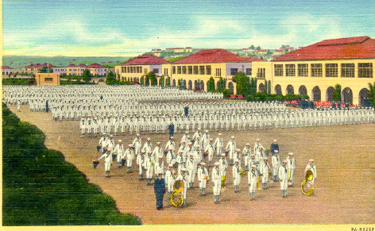

What pushed the United States from isolation to empire — and who paid the price?
❧
Havana Harbor, Cuba. February 15, 1898. It is 9:40 at night when an explosion tears through the USS Maine, an American battleship anchored in the harbor. The blast kills 266 American sailors. No one is sure what caused it. But American newspapers already have a headline: "Remember the Maine."
That explosion did not start a war on its own. But it gave a country that was already looking outward the spark it needed. By 1898, the United States had spent a century growing across the North American continent. Now a new generation of leaders was asking a different question: Why stop at the coastline? What followed was forty years of expansion, war, diplomacy, and consequences that are still shaping the world students live in today.
✦
Chapter 1 — The Spanish-American War: 1898

Theodore Roosevelt and the Rough Riders after the charge at San Juan Heights, Cuba, 1898. Roosevelt called the battle "the great day of my life." | Library of Congress
In 1898, Cuba was a Spanish colony in open revolt. Cuban rebels had been fighting for independence for years, and Spain responded with brutal force. American newspapers, especially those owned by William Randolph Hearst and Joseph Pulitzer, published story after story about Spanish cruelty. They used dramatic headlines and exaggerated reports to build public outrage. This kind of sensational journalism had a name: yellow journalism. It sold newspapers, and it pushed Americans toward war.
When the USS Maine exploded in Havana Harbor in February 1898, Congress declared war on Spain within weeks. The actual fighting lasted only four months. American forces defeated Spanish troops in Cuba, Puerto Rico, and the Philippines. At the end of the war, Spain signed the Treaty of Paris, giving the United States control of Puerto Rico, Guam, and the Philippines.
The United States had just become an empire. ImperialismWhen a stronger country takes political or economic control over a weaker country or territory, often by force. was not a new idea in the world; Britain, France, Germany, and Japan had all been building empires for decades. But for the United States, which had declared its independence from a colonial power, the shift raised a painful question: was America becoming the very thing it once fought against?
Many Americans said yes. A group called the Anti-Imperialist League, which included writer Mark Twain and steel magnate Andrew Carnegie, argued that the United States had no right to rule people who had not consented to be governed. In the Philippines, a revolution against American rule broke out almost immediately after the Spanish left. The Philippine-American War lasted three years and killed more than 4,000 American soldiers and an estimated 200,000 Filipino civilians.
Political cartoon depicting yellow journalism publishers driving the country toward war, 1898. American newspapers played a major role in building public support for the Spanish-American War. | Library of Congress / Wikimedia Commons
❧
Chapter 2 — Building an Empire: The Canal and the Open Door

Workers excavating the Culebra Cut during Panama Canal construction, c. 1907. More than 56,000 workers from the Caribbean, Europe, and Asia built the canal. At least 5,600 died doing it. | Library of Congress
After the Spanish-American War, the United States needed a faster way to move its navy between the Atlantic and Pacific Oceans. The solution was a canal through the narrow strip of land in Panama. There was only one problem: Panama was part of Colombia, and Colombia refused to sell the rights. President Theodore Roosevelt solved this by quietly supporting a Panamanian independence movement. Panama declared independence in 1903. Within days, the United States signed a treaty giving it control of the Canal Zone.
Construction of the Panama Canal began in 1904 and took ten years. More than 56,000 workers from the Caribbean, Europe, and Asia carved a 51-mile waterway through jungle and mountains. At least 5,600 workers died from accidents and disease. When the canal opened in 1914, it cut the voyage from New York to San Francisco from 13,000 miles to 5,000 miles. American naval and commercial power grew overnight.
At the same time, the United States was pushing into Asia. China in the late 1800s had been carved into competing spheres of influence by Britain, France, Germany, Japan, and Russia. Each power controlled trade in its zone. The United States arrived late. Secretary of State John Hay solved the problem with the Open Door PolicyA U.S. foreign policy that demanded all powerful nations allow equal trading access to China, so no single country could lock the U.S. out of Chinese markets., which demanded that all powerful nations allow equal trading access to China. No one formally agreed. But no one formally refused either. The United States had announced itself as a player in Asia without firing a single shot.
The Monroe DoctrineAn 1823 U.S. policy declaring that European powers must not interfere in the affairs of any country in the Western Hemisphere, and warning that the U.S. would view such interference as a threat., originally written in 1823 by President James Monroe, had told European powers to stay out of the Western Hemisphere. Roosevelt now updated it. The Roosevelt Corollary of 1904 added that the United States had the right to intervene in any Latin American country that could not manage its own finances. The U.S. was no longer just keeping Europe out; it was keeping itself in charge.
"I took the Isthmus, started the canal, and then left Congress not to debate the canal, but to debate me."
— President Theodore Roosevelt, speech at Berkeley, 1911
Roosevelt openly admitted that he had engineered Panama's independence to get the canal; his boast reveals exactly how the United States used its power to reshape smaller countries without their full consent.

The SS Ancon, the first ship to officially pass through the Panama Canal, August 15, 1914. | Library of Congress / Wikimedia Commons

Political cartoon depicting the Open Door Policy, showing Western powers competing for access to Chinese trade, c. 1900. | Library of Congress / Wikimedia Commons
✦
Chapter 3 — Three Presidents, Three Ways to Run the World

President Theodore Roosevelt, c. 1904. His "Big Stick" approach to foreign policy made the U.S. the dominant power in the Western Hemisphere. | Library of Congress
Between 1901 and 1921, three different presidents shaped how the United States dealt with the rest of the world. Each one had a different theory of power. Understanding those three theories is one of the most useful tools in American history; they still describe how American foreign policy debates work today.
Theodore Roosevelt believed in raw power. He summed up his approach in a West African proverb: "Speak softly and carry a big stick." His idea was called diplomacyThe practice of managing relationships between countries through negotiation, agreements, and communication instead of military force. by force, or Big Stick diplomacy. If a Latin American country owed money to European banks and could not pay, Roosevelt would send in American troops or financial managers to take control before the Europeans could. The U.S. military intervened in Cuba, Nicaragua, Haiti, and the Dominican Republic under this approach.
William Howard Taft, who followed Roosevelt, preferred a different tool: money. His approach was called Dollar Diplomacy. Instead of sending soldiers, Taft encouraged American banks to invest heavily in Latin American and Asian countries. If those countries depended on American investment, they would naturally align with American interests. It was empire through economics rather than armies; but to the people in those countries, the result often felt the same.
Woodrow Wilson followed Taft and believed in something he called Moral Diplomacy. Wilson argued that the United States should only support democratic governments that respected human rights. He said America should spread its values, not just its money or its soldiers. In practice, Wilson still sent troops into Mexico, Haiti, and Nicaragua. But he genuinely believed he was doing it for the right reasons. Whether good intentions changed the outcome for the people affected is a question historians still debate.
President
Doctrine Name
Core Idea
Example
Theodore Roosevelt
Big Stick Diplomacy
Use military force or the threat of it to control outcomes
U.S. troops sent to Cuba, Nicaragua, Haiti
William Howard Taft
Dollar Diplomacy
Use American investment to create economic dependence
U.S. banks invested in Latin America and Asia
Woodrow Wilson
Moral Diplomacy
Support only democratic governments; spread American values
U.S. intervention in Mexico, 1914 and 1916
"Chronic wrongdoing, or an impotence which results in a general loosening of the ties of civilized society, may in America, as elsewhere, ultimately require intervention by some civilized nation, and in the Western Hemisphere the adherence of the United States to the Monroe Doctrine may force the United States... to the exercise of an international police power."
— President Theodore Roosevelt, Roosevelt Corollary to the Monroe Doctrine, December 6, 1904
Roosevelt is telling Congress and the world that the United States has appointed itself the police force of the Western Hemisphere; this single paragraph justified American military and financial intervention in Latin America for the next 30 years.
Question 1: Roosevelt says the U.S. may need to exercise "international police power." In plain language, what is he saying the U.S. has the right to do — and to whom?
Question 2: The Essential Question asks who paid the price for U.S. expansion. Based on this quote and what you read in Chapters 1 through 3, who were the people paying that price?
❧
Chapter 4 — WWI and the Home Front

"I Want YOU for U.S. Army," James Montgomery Flagg, 1917. The U.S. government used aggressive propaganda campaigns to recruit soldiers and build support for the war at home. | Library of Congress
When the United States entered World War I in April 1917, the war was already three years old in Europe. More than 10 million soldiers had already died on the Western Front. President Wilson asked Congress for a declaration of war after German submarines began sinking American ships and after the discovery of the Zimmermann Telegram: a secret German message asking Mexico to attack the United States in exchange for help recovering Texas, New Mexico, and Arizona.
The home frontThe civilian side of a country during wartime, including the workers, families, and communities who support the war effort from home rather than fighting on the battlefield. changed rapidly once the U.S. entered the war. The government launched massive campaigns to sell Liberty Bonds, conserve food, and recruit soldiers. The Committee on Public Information produced thousands of posters, pamphlets, and films designed to build war fever. Schools stopped teaching German. Sauerkraut was renamed "liberty cabbage." German Americans faced discrimination and violence regardless of how long their families had lived in the country.
The war also opened new doors for some Americans. With millions of men overseas, factories hired women in large numbers for the first time. African Americans joined what became known as the Great Migration: hundreds of thousands of Black families moved from the rural South to Northern cities to take factory jobs that paid far more than sharecropping. The demand for Black labor in Northern factories, and the military service of 370,000 African American soldiers during WWI, fueled demands for civil rights that would grow for the next fifty years.
When the war ended in November 1918, the United States emerged as the most economically powerful nation on earth. Britain and France were exhausted and in debt. Germany was shattered. The United States had lent money to every Allied nation during the war, making American banks the creditors of Europe. Power was shifting, and everyone could feel it. The era of British dominance over global trade and finance was ending. The American era was beginning.
African American families arriving in Chicago during the Great Migration, c. 1918. Between 1910 and 1930, more than one million Black Americans left the South for Northern cities. | Library of Congress
"We intend to begin on the first of February unrestricted submarine warfare. We shall endeavor in spite of this to keep the United States of America neutral. In the event of this not succeeding, we make Mexico a proposal to alliance on the following basis: make war together, make peace together, generous financial support and an understanding on our part that Mexico is to reconquer the lost territory in Texas, New Mexico, and Arizona."
— Arthur Zimmermann, German Foreign Secretary, telegram to Mexico, January 19, 1917
When British intelligence decoded this telegram and handed it to the United States, it was the final push that brought America into WWI; Germany was promising Mexico parts of the American Southwest in exchange for opening a second front against the U.S.
How This Still Matters Today
Every decision the United States makes about military bases, trade deals, and foreign intervention today runs on the same logic that Roosevelt, Taft, and Wilson built between 1898 and 1920.
A U.S. Navy carrier strike group operating in the Pacific Ocean. The naval infrastructure the United States built starting in 1898 still shapes American power today. | Wikimedia Commons / U.S. Navy
Roosevelt said the United States had to be the policeman of the Western Hemisphere. Who gave the United States that job — and who decided it needed doing?
San Diego Became a Navy Town Because of 1898: The Spanish-American War Built the Base That Still Defines the City

Naval Training Station San Diego, c. 1920. The base was established directly because of the Spanish-American War and the need for a Pacific naval power base. | San Diego History Center / Wikimedia Commons
San Diego's identity as a military city was built directly by the Spanish-American War. After 1898, the U.S. Navy needed a major Pacific base to project power toward Asia and the new territories it had acquired. San Diego Bay offered one of the finest natural harbors on the Pacific Coast. The Navy began building there in earnest, and by 1917 the city had become one of the most important military hubs in the country.
Naval Base San Diego, established in 1922, is still the largest naval base on the West Coast; it is home to more than 50 ships and 20,000 sailors, and it exists because of decisions made in 1898 about what kind of power the United States wanted to be in the Pacific.